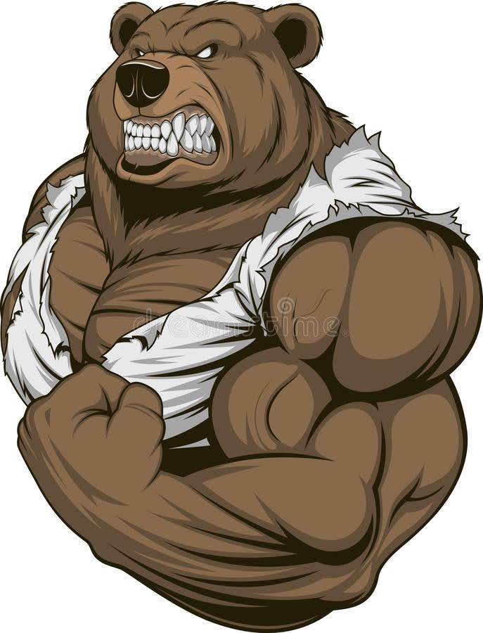

Обо мне
Имя: Кичайкин Никита Петрович.
Место жительства: г.Амурск ; Хабаровского края.
Образование:Среднее техническое - Информационные технологии по отраслям , оператор ЭВМ
Граждфнство:Российская Федерация
Доп информация:Второе образование среднее техническое Машинист эксковатора,
мое хобби спорт зал, прогулки. Не пью и не курю.
